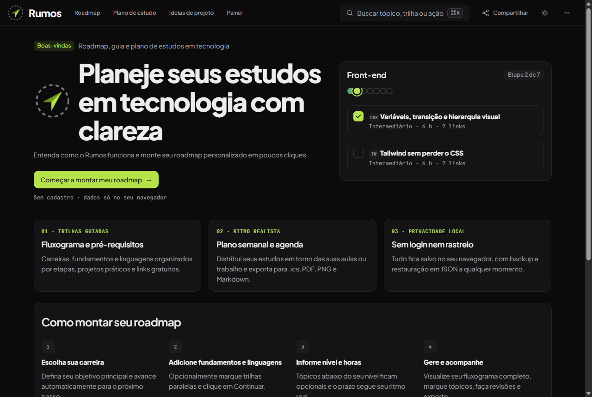
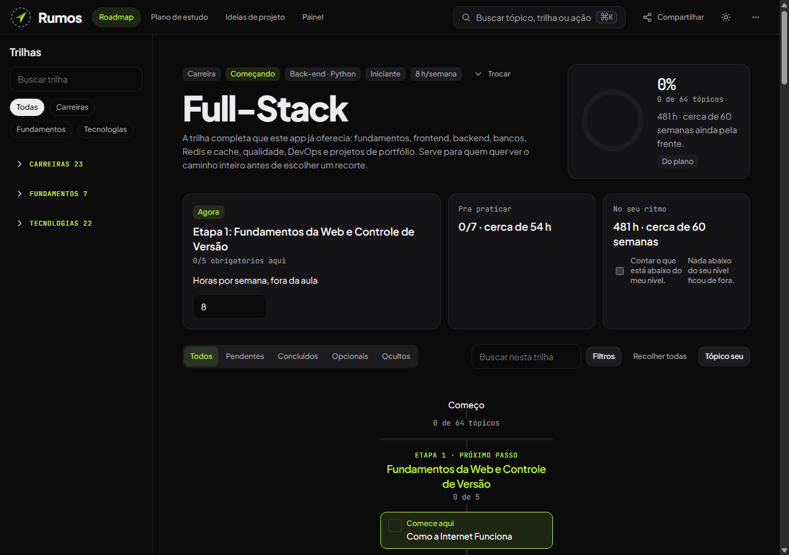
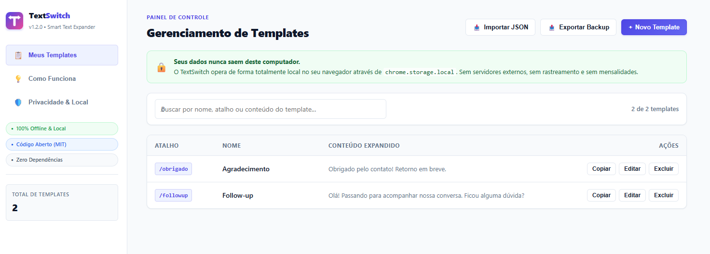

Desenvolvimento Web
Interfaces responsivas e acessíveis com HTML5 semântico, CSS3 (Grid, Flexbox e design tokens) e JavaScript (ES6+ / ES Modules) sem dependências pesadas.
ENGENHARIA DE SOFTWARE · DESENVOLVIMENTO FULL STACK
Construo aplicações web com JavaScript (ES6+ / ES Modules), HTML5, CSS3 e
testes automatizados com node:test — como o Rumos
e a extensão TextSwitch — enquanto aprofundo estudos em
TypeScript, APIs REST e bancos de dados relacionais.
Graduando em Engenharia de Software pela UNICSUL (previsão de conclusão em dez/2029) e participante do programa DIO Campus Expert (2026). Desenvolvo aplicações focadas em separação de responsabilidades, ausência de dependências desnecessárias e cobertura por testes automatizados, com destaque para o Rumos e a extensão TextSwitch.
Possuo trajetória sólida em suporte técnico, Help Desk e análise de sistemas internos — atualmente na Megabit Fibra (jul/2024 – atual) e anteriormente na Speak Up Teleatendimento (2017 – 2019), além de passagens por operações de Customer Experience e vendas técnicas na Kavak e iPlace. Atuo no dia a dia com troubleshooting, diagnóstico de causa-raiz, gestão de SLA e comunicação técnica.
Complemento a formação com estudos em TypeScript, APIs REST em Node.js, modelagem UML, Clean Code, fundamentos de computação em nuvem (AWS Cloud Fundamentals) e IA (IBM / Anthropic), além de inglês técnico intermediário. Busco oportunidade como Desenvolvedor Júnior ou Estagiário em Engenharia de Software / Full Stack.
Suporte especializado a sistemas internos e usuários, controle de backlog, análise de falhas de software e atuação conjunta com o time de desenvolvimento na identificação de bugs e otimização de fluxos.
Auditoria de dados e identificação de gargalos em sistemas internos na Kavak (2021–2022) e vendas consultivas de soluções tecnológicas na iPlace (Apple Premium Reseller, 2024).
Diagnóstico e troubleshooting estruturado de incidentes de redes e conectividade, análise de causa-raiz, triagem em ferramenta ITSM e gestão de acordos de nível de serviço (SLA).
Bacharelado em Engenharia de Software em andamento, conclusão do DIO Campus Expert 2026 e publicação de projetos em JavaScript e Node.js, em busca de posição Júnior ou Estágio em Full Stack / Backend.
Interfaces responsivas e acessíveis com HTML5 semântico, CSS3 (Grid, Flexbox e design tokens) e JavaScript (ES6+ / ES Modules) sem dependências pesadas.
Separação entre regras de negócio puras e camada de DOM, suítes automatizadas
com node:test e pipelines de validação no GitHub Actions.
Aprofundamento em TypeScript, Node.js, APIs REST, modelagem UML, estruturas de dados, Clean Code, banco relacional (SQL) e fundamentos AWS/IA.
Vivência prática em ITSM, redes de computadores, diagnóstico de causa-raiz, reprodução de falhas e alinhamento técnico com usuários e times de produto.
Tecnologias aplicadas nos projetos publicados e competências em formação.
Projetos publicados com código-fonte aberto, evidências de interface e testes automatizados.
Aplicação web livre para planejamento de estudos em tecnologia. A partir da escolha de carreira, fundamentos, tecnologias, nível e carga horária semanal, o Rumos monta um trajeto combinado sem duplicidades, respeita pré-requisitos e organiza o plano na rotina do usuário.
.ics, CSV ou horário manualnode:test e validação contínua via GitHub Actions

Extensão open-source para expansão instantânea de atalhos e templates
dinâmicos ({formdate}, {formmenu},
{formtext}) em qualquer campo web, com armazenamento 100% local
via chrome.storage.local, zero dependências e suíte de testes
unitários.

Repositórios de prática focados em HTML5 semântico, CSS modular, Grid, Flexbox, responsividade e animações — consolidando fundamentos de layout antes de avançar para lógica e arquitetura em JavaScript.
Disponível para oportunidades de estágio ou posição júnior em Desenvolvimento de Software Full Stack. Contato direto por e-mail ou LinkedIn.